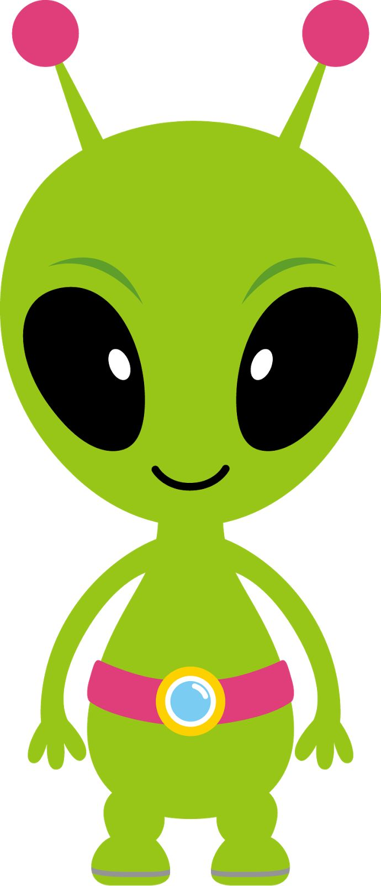
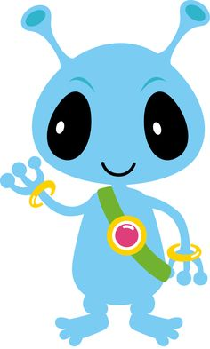

Introduction
As you can guess, Sara is a semi-intelligent being. After all,
she wouldn't be able to write this if she wasn't a human being.
Well, there's a possibility that she could be an alien in disguise.
However, we can assure you that she is in no way an alien...Or is
she? :)


Name
Once upon a time, there was a girl who goes by the name of
Narissara. Narissara like her name, but the majority of the human
race are unable to pronounce it. Many times, people forced her to
repeat her name over and over because they want their pronunciation
to be perfect. It was exhausting to pretend that they are right.
The girl eventually decided to shorten her name. Now, people
referred to her as "Sara".
Past
Sara live with her aunt,uncle, and cousins in Thailand. One day,
the mom re-married and decided that the girl could live in Canada
with her. A year later, they move to China.After 8 years, the
family moved back to Canada. Sara took up online schooling
there.Once the paperwork was cleared up, Sara was allowed to attend
any school in Canada. The girl chose Clayton heights due to it's
close proximity to her house and the free wifi that come along with
it.
Present Day

While Sara would very much like to talk about her love for both
functional and imperative languages, this would become a very
boring presentation indeed. So for the sake of entertainment, let's
talk about her unsual hobbies that usually consist of: provoking
people, debating, reverse debugging,and silently judging observing
people behaviours.
5 current attributes
- Sara is etremely resilient.
- Sara is able to see both side of a coin and can take any sides
in an agrument or debate.
- Sara is flexible, and can adapt to any situation. If
needed, she can reinvent herself.
- Sara considered herself to be openminded. She doesn't stick
to one singular thing, concept or belief. She prefer to explore
different concepts and ideas...As long as it's logical.
-
- Sara is good at prioritizing things
5 future aspirations
- Sara wants to try taking over the wolrd in order to see
what's the most efficent and reliable methods for world
domination. And how to maintain my monachary.
- After Sara graduate, she wants to become a pen tester.
However, any other job in the security department is fine
as well.
- Sara wants to make and maintain friendship.
- Sara wants to dress up in halloween coutume every day
to work.
- Sara woud really want to buy a teleportation
device
- Be the leader of some cool revoulution or
something.
- Become immortal
/